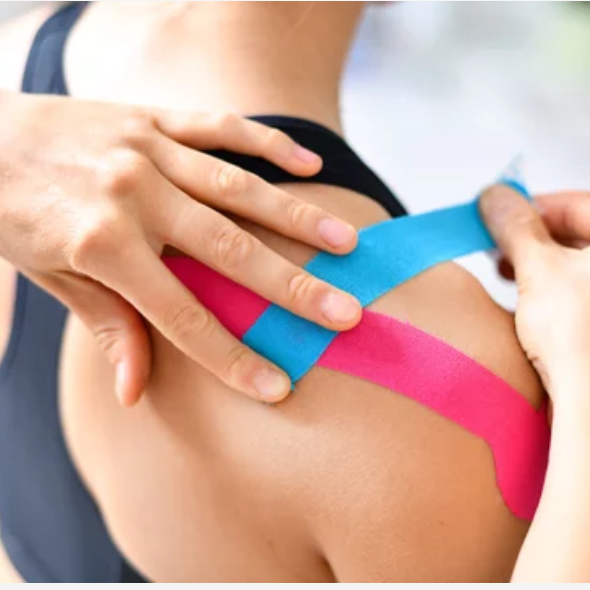

Your personalized physical therapy journey starts here.
PT Peaks provides one-on-one treatment tailored to your needs in the comfort of your home. We eliminate travel time and optimize your rehabilitation on your terms, integrating seamlessly into your lifestyle.
Our physical therapy service is designed for convenience, privacy, and personalized one-on-one treatments tailored to your specific needs. Every session is customized to help you achieve your rehabilitation goals.
Optimize your rehab by eliminating travel time and integrating therapy into your lifestyle in your own space. We understand the unique needs of the Peaks Island community and bring professional care directly to you.
Contact PT Peaks today to schedule your personalized in-home physical therapy consultation on Peaks Island.
linda@ptpeaks.com
207-650-8582